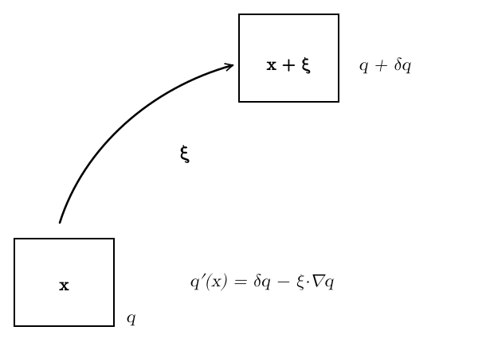
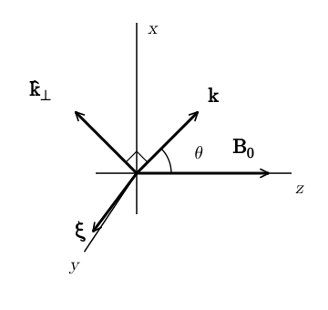
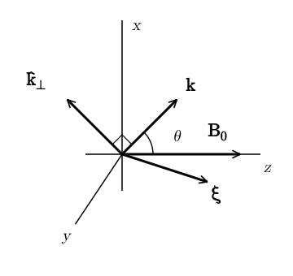
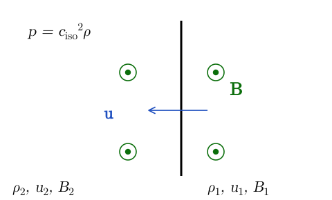

26 MHD Waves
Waves play a very important role in the dynamics of magnetized plasmas. Particle-wave interaction with the interstellar medium regulates the propagation of cosmic rays in the galaxy. In strong MHD turbulence, the non-linear interaction between Alfvén waves acts as the main driver of the turbulence cascade. Torsional Alfvén waves extract angular momentum from proto-stellar cores allowing them to collapse and form stars. These are just a few examples. In these notes, we discuss the phenomenology of waves in compressible MHD.
26.1 Waves in a Homogeneous Plasma
We consider a homogeneous plasma described by the ideal-MHD equations with \[ \rho_0 = \operatorname{const}, \qquad \mathbf{v}_0 = 0, \qquad \mathbf{B}_0 = B_0 \hat{\mathbf{z}} . \tag{26.1}\] We proceed in the same way as when we derived the dispersion relation for sound waves in unmagnetized media (Chapter 9). However, as we will see shortly, the phenomenology of MHD waves is significantly more complex than that of sound waves. As before, we introduce a perturbation with a Lagrangian displacement \(\boldsymbol{\xi}\), shown in Figure 26.1.

The pressure and density perturbations in the Lagrangian frame are \[ \delta \rho = - \rho_0 \nabla \cdot \boldsymbol{\xi}, \qquad \delta p = \frac{\Gamma p_0}{\rho_0} \delta \rho = - \Gamma p_0 \nabla \cdot \boldsymbol{\xi}. \tag{26.2}\] The magnetic field perturbations can be computed from the linearized induction equation: \[ \frac{\partial \delta \mathbf{B}}{\partial t} = \nabla \times \left( \frac{\partial \boldsymbol{\xi}}{\partial t} \times \mathbf{B}_0 \right) \Longrightarrow \delta \mathbf{B}= \nabla \times (\boldsymbol{\xi} \times \mathbf{B}_0) . \tag{26.3}\] The linearized momentum equation becomes (note that the unperturbed current vanishes \(\mathbf{j}_0 = 0\)): \[ \rho \frac{\mathrm{d} \mathbf{v}}{\mathrm{d} t} = - \nabla p +\mathbf{j} \times \mathbf{B} \Longrightarrow \rho_0 \frac{\partial^2 \boldsymbol{\xi}}{\partial t^2} = - \nabla \delta p + \delta \mathbf{j} \times \mathbf{B}_0 . \tag{26.4}\] The perturbed current is \[ \delta \mathbf{j}= \frac{1}{4 \pi} \nabla \times \delta \mathbf{B}= \frac{1}{4 \pi} \nabla \times [\nabla \times (\boldsymbol{\xi} \times \mathbf{B}_0)], \tag{26.5}\] so putting everything together we get the oscillation equation \[ \boxed{ \begin{aligned} \rho_0 \frac{\partial^2 \boldsymbol{\xi}}{\partial t^2} = {} & \Gamma p_0 \nabla (\nabla \cdot \boldsymbol{\xi}) \\ & + \frac{1}{4 \pi} \{ \nabla \times [\nabla \times (\boldsymbol{\xi} \times \mathbf{B}_0)] \} \times \mathbf{B}_0 . \end{aligned}} \tag{26.6}\] Of course, if \(\mathbf{B}_0\)=0, this equation reduces to the equation for sound waves. All the new physics is in the last term on the RHS. To derive a dispersion relation, we take the usual ansatz \[ \boldsymbol{\xi} (t, \mathbf{x}) =\boldsymbol{\xi}_1 e^{\mathrm{i} (\mathbf{k} \cdot \mathbf{x}- \omega t)}, \tag{26.7}\] which we plug into the oscillation equation. This yields \[ \begin{aligned} - \rho_0 \omega^2 \boldsymbol{\xi}_1 = {} & - \Gamma p_0 \mathbf{k} (\mathbf{k} \cdot \boldsymbol{\xi}_1) \\ & - \frac{1}{4 \pi} \{ \mathbf{k} \times [\mathbf{k} \times (\boldsymbol{\xi}_1 \times \mathbf{B}_0)] \} \times \mathbf{B}_0 . \end{aligned} \tag{26.8}\] As expected from the general perturbation theory, the oscillation equation give rise to an eigenvalue problem in the form \[ - \rho_0 \omega^2 \boldsymbol{\xi}_1 =\mathbf{F} (\mathbf{k}) \boldsymbol{\xi}_1, \tag{26.9}\] where \(\mathbf{F} (\mathbf{k})\) is a matrix. This equation has solutions with \(\boldsymbol{\xi}_1 \neq 0\) if and only if \[ \det [\mathbf{F} (\mathbf{k}) + \rho_0 \omega^2 \mathbf{I}] = 0. \tag{26.10}\] The last equation is defines the dispersion relation \(\omega = \omega (\mathbf{k})\). The eigenvectors of \(\mathbf{F} (\mathbf{k})\) define the polarization vector \(\boldsymbol{\xi}_1\) of the wave.
26.2 Families of MHD Waves
In general, there are three solutions to the eigenvalue problem Equation 26.9, corresponding to three different modes. In the unmagnetized case, the three modes are degenerate (in a uniform medium), so we find only sound waves. In the magnetized case, there are always three types of waves: Alfvén waves, slow-, and fast-magnetosonic waves. We consider these separately below.
26.2.1 Alfvén Waves
We consider at first the situation depicted in Figure 26.2:
\(\mathbf{B}_0\) is along \(z\)
\(\mathbf{k}\) is in the \(x z\)-plane
\(\boldsymbol{\xi}\) is along \(y\)
Note that \(\mathbf{k} \cdot \boldsymbol{\xi}= 0\), meaning that \(\delta \rho = \delta p = 0\).

To compute the Lorentz force we proceed as follows. First we note that \[ \boldsymbol{\xi} \times \mathbf{B}_0 {= \xi_y} B_0 \hat{\mathbf{x}} . \tag{26.11}\] Next, we compute the magnetic field perturbation as \[ \mathbf{k} \times (\boldsymbol{\xi} \times \mathbf{B}_0) = k \xi_y B_0 \cos \theta \hat{\mathbf{y}} = \delta \mathbf{B}. \tag{26.12}\] The current is given by \[ \mathbf{k} \times [\mathbf{k} \times (\boldsymbol{\xi} \times \mathbf{B}_0)] = - k^2 \xi_y B_0 \cos \theta \hat{\mathbf{k}}_{\perp} = 4 \pi \delta \mathbf{j}. \tag{26.13}\] Finally, the Lorentz force is \[ 4 \pi \delta \mathbf{j} \times \mathbf{B}_0 = k^2 B_0^2 \cos^2 \theta \xi_y \hat{\mathbf{y}} = (\mathbf{k} \cdot \mathbf{B}_0)^2 \boldsymbol{\xi}. \tag{26.14}\] So \(\boldsymbol{\xi}\) evolves as a mass attached to an elastic spring with spring constant \((\mathbf{k} \cdot \mathbf{B}_0)^2\). In formulas, \[ \begin{aligned} - \rho_0 \omega^2 \xi_y &= \tfrac{1}{4 \pi} k^2 B_0^2 \cos^2 \theta \xi_y \\ \Longrightarrow \quad & \boxed{\omega = \pm \frac{B_0}{\sqrt{4 \pi \rho_0}} k \cos \theta = kv_A \cos \theta .} \end{aligned} \tag{26.15}\] This type of waves are called Alfvén waves from Alfvén (1942) (Physics Nobel Prize in 1970). Some comments are in order.
If \(\theta = 0\), these waves propagate along the field lines with velocity (Alfvén velocity): \[ v_A = \frac{B_0}{\sqrt{4 \pi \rho_0}} . \tag{26.16}\] If \(\theta > 0\), the waves can still propagate (as long as \(\theta \neq 90^{\circ}\) or \(270^{\circ}\)), but at a reduced speed.
The displacement \(\boldsymbol{\xi}\) is perpendicular to the background field \(\mathbf{B}_0\), so these waves are transverse. More precisely, Alfvén waves behave as transverse waves in an elastic string (the magnetic field). Indeed, the restoring force for these waves is magnetic tension.
As already mentioned \(\delta \rho = \delta p = 0\) for these waves. As such, Alfvén waves are incompressible and exist also in incompressible flows.
Although we have derived Alfvén waves as small perturbations, it turns out that Alfvén waves are an exact solution to the full non-linear equations. This means that MHD flows can support arbitrarily strong waves.
26.2.2 Magnetosonic Waves
We consider at first the situation depicted in Figure 26.3:
\(\mathbf{B}_0\) is along \(z\)
\(\mathbf{k}\) is in the \(x z\)-plane
\(\boldsymbol{\xi}\) is also in the \(x z\)-plane
Note that \(\delta p, \delta \rho\) are no longer necessarily zero.

We can compute the current using the following vector identity \[ \mathbf{a} \times (\mathbf{b} \times \mathbf{c}) =\mathbf{b} (\mathbf{a} \cdot \mathbf{c}) -\mathbf{c} (\mathbf{a} \cdot \mathbf{b}) \tag{26.17}\] and the fact that \(\mathbf{k} \perp \boldsymbol{\xi} \times \mathbf{B}_0\), since the latter is in the \(y\)-direction, we can write \[ \mathbf{k} \times [\mathbf{k} \times (\boldsymbol{\xi} \times \mathbf{B}_0)] =\mathbf{k} [\mathbf{k} \cdot (\boldsymbol{\xi} \times \mathbf{B}_0)] - k^2 (\boldsymbol{\xi} \times \mathbf{B}_0) = - k^2 (\boldsymbol{\xi} \times \mathbf{B}_0) . \tag{26.18}\] Plugging this into the expression for the Lorentz force gives \[ \delta \mathbf{j} \times \mathbf{B}_0 = \frac{1}{4 \pi} \{ \mathbf{k} \times [\mathbf{k} \times (\boldsymbol{\xi} \times \mathbf{B}_0)] \} \times \mathbf{B}_0 = - \frac{k^2}{4 \pi} (\boldsymbol{\xi} \times \mathbf{B}_0) \times \mathbf{B}_0 = - \frac{k^2 B_0^2 \xi_x}{4 \pi} \hat{\mathbf{x}} . \tag{26.19}\] The pressure force is \[ - \Gamma p_0 \mathbf{k} (\mathbf{k} \cdot \boldsymbol{\xi}) = - k^2 \Gamma p_0 (\xi_x \sin \theta + \xi_z \cos \theta) (\sin \theta \hat{\mathbf{x}} + \cos \theta \hat{\mathbf{z}}) . \tag{26.20}\] Using \(c_s^2 = \Gamma p_0 / \rho_0\) and \(v_A = B_0 / \sqrt{4 \pi \rho_0}\), we find \[ \omega^2 \left(\begin{array}{c} \xi_x\\ \xi_z \end{array}\right) = k^2 \left(\begin{array}{cc} c_s^2 \sin^2 \theta + v_A^2 & c_s^2 \sin \theta \cos \theta\\ c_s^2 \sin \theta \cos \theta & c_s^2 \cos^2 \theta \end{array}\right) \left(\begin{array}{c} \xi_x\\ \xi_z \end{array}\right) . \tag{26.21}\] The dispersion relation is (after a long calculation): \[ \boxed{ \begin{aligned} \left( \frac{\omega}{k} \right)^2 = {} & \frac{v_A^2 + c_s^2}{2} \\ & \pm \frac{1}{2} \sqrt{(v_A^2 - c_s^2)^2 + 4 c_s^2 v_A^2 \sin^2 \theta} . \end{aligned}} \tag{26.22}\] So there are two solutions and two corresponding polarization vectors \(\boldsymbol{\xi}_s\) and \(\boldsymbol{\xi}_f\). Note that \(\boldsymbol{\xi}_s \perp \boldsymbol{\xi}_f\), since the matrix \(\mathbf{F} (\mathbf{k})\) in Equation 26.21 is self-adjoint. Conventionally, \(\boldsymbol{\xi}_s\) is taken to be the polarization corresponding to the smaller group velocity. This is the so-called slow magnetosonic wave. Conversely, \(\boldsymbol{\xi}_f\) is called the fast magnetosonic wave. As we will see shortly, these have a mixed character of sound and magnetic waves.
26.3 Effect of Propagation Direction
We can get additional insight into the nature of the three modes by considering the properties of waves propagating along the magnetic field lines, or perpendicular to them. The general case will turn out to be intermediate between these two limits.
26.3.1 Parallel Propagating Waves (\(\theta = 0\))
Let us consider the case of waves propagating along the background magnetic field lines, that is \(\theta = 0\). In this case, the dispersion relation for Alfvén, slow, and fast modes are \[ \left( \frac{\omega}{k} \right)^2 = v_A^2, \qquad \left( \frac{\omega}{k} \right)^2 = \frac{1}{2} [v_A^2 + c_s^2 \pm |v_A^2 - c_s^2 |] . \tag{26.23}\] There are two different cases, depending on whether \(v_A > c_s\) or \(v_A < c_s\), shown in Figure 26.4.
![Two panels with axes x up, z right and y to the lower left; B0 and k both lie along z. Left, for v_A greater than c_s: the fast mode is polarized along x, the slow mode along z and the Alfvén mode along y, with omega_s squared equal to c_s squared k squared and omega_f squared equal to omega_A squared equal to v_A squared. Right, for v_A less than c_s the fast and slow modes exchange polarizations: the slow mode is along x and the fast mode along z, with omega_f squared equal to c_s squared k squared and omega_s squared equal to omega_A squared equal to v_A squared.](../figures/mhd-waves/waves-parallel-polarization.svg)
If \(v_A > c_s\), then
The slow mode polarization is along the magnetic field, the mode propagate at speed \(c_s\) and its restoring force is pressure.
Fast and Alfvén modes are orthogonal to the magnetic field and to each other and both have the character of Alfvén waves propagating with speed \(v_A\). Magnetic tension is their restoring force.
If \(v_A < c_s\), then the situation is similar as before, but slow and fast mode exchange character: the fast mode is now a sound wave, while the slow mode is an Alfvén wave.
26.3.2 Perpendicularly Propagating Waves (\(\theta = 90^{\circ}\))
Let us consider the case of waves propagating perpendicular to the field lines. In this case, Alfvén and slow modes cannot propagate (they have \(\omega_{A, s} = 0\)). The fast-magnetosonic wave satisfies the dispersion relation \[ \left( \frac{\omega}{k} \right)^2 = v_A^2 + c_s^2 . \tag{26.24}\] In this case \(\boldsymbol{\xi}_f\) is parallel to \(\mathbf{k}\). The restoring force for the mode is the sum of both magnetic tension and pressure, which explains why this mode is called the “magnetosonic” mode.
26.3.3 Friedrichs Diagrams
Friedrichs diagrams show the propagation velocity of the different MHD modes as a function of a generic propagation angle \(\theta\). The special cases of \(\theta = 0, 90^{\circ}\) discussed above correspond to the \(x\)- and \(y\)-axis in Figure 26.5. In general, slow and fast modes have a mixed character between sound waves and Alfvén waves.
![Two polar plots of the phase speeds of the slow (solid), Alfvén (dashed) and fast (dotted) modes as a function of the angle from the magnetic field (0 degrees to the right). Left, v_A greater than c_s: the fast mode is almost circular with radius about 2.2, the Alfvén mode is a pair of lobes reaching 2 along the field and the slow mode a pair of smaller lobes reaching 1. Right, v_A less than c_s: the fast mode is again almost circular, and the Alfvén and slow modes are two nearly identical lobes reaching 1 along the field.](../figures/mhd-waves/waves-friedrichs-diagrams.svg)
26.4 Weak and Strong Field Limits
Finally, it is also instructive to compare slow- and fast-magnetosonic waves in the limits of weak magnetic field (\(c_s \gg v_A\)) and strong magnetic field \((v_A \gg c_s)\), as illustrated in Figure 26.6. Note that when \(v_A\) becomes a sizable fraction of the speed of light, we can no longer use Newtonian MHD, because the displacement current becomes important. In this limit, one needs to use the (significantly more complex) equations of relativistic magnetohydrodynamics.
![Two panels with axes x up, z right and y to the lower left, B0 along z and k in the xz-plane at 45 degrees from z. Left, weak field (c_s much larger than v_A): the fast displacement lies close to k, slightly steeper, and the slow displacement points up and to the left, nearly perpendicular to k. Right, strong field (v_A much larger than c_s): the fast displacement is close to the x axis, almost perpendicular to B0, and the slow displacement is nearly parallel to B0. In both panels the Alfvén displacement points along y.](../figures/mhd-waves/waves-weak-strong-field.svg)
Left panel: the fast mode is \(\sim\) a sound wave and the slow mode is nearly perpendicular to \(\mathbf{k}\).
Right panel: the fast mode is \(\sim\) an Alfvén wave and the slow mode is nearly parallel to \(\mathbf{B}_0\).
26.5 Shock Waves
As for non-magnetized gasses, MHD waves can steepen into shock waves. Alfvén waves can steepen into rotational discontinuities, in which the magnetic field direction suddenly changes across an interface. Slow- and fast-magnetosonic waves can give rise to (slow and fast) shocks and rarefaction waves. The theory of MHD shocks is very complex and beyond the scope of this course. A good overview is given in Bazer and Ericson (1959). It is important to be aware of that, even in the case of shocks propagating along magnetic field lines, MHD effects can be important. For example, hydrodynamics shocks can split into a slow and a fast shock, separated by a region in which a perpendicular component of the \(B\)-field is created. These are sometimes called switch on and switch off discontinuities.
We treat in detail only one case that is relevant for the interstellar medium: a shock propagating in an isothermal flow with perpendicular magnetic field, as illustrated in Figure 26.7.

The shock conditions for the shock shown in Figure 26.7 are: \[ [\![ \rho u ]\!] = 0, \quad [\![ Bu ]\!] = 0, \quad \left[\!\left[ p + \rho u^2 + \frac{B^2}{8 \pi} \right]\!\right] = 0, \tag{26.25}\] where \([\![ \cdot ]\!]\) denotes the jump across the shock.
We remind that, in the absence of a magnetic field, the compression factor of an isothermal shock is \[ \frac{\rho_2}{\rho_1} = \left( \frac{u_1}{a} \right)^2, \tag{26.26}\] which can become arbitrarily large for large upstream Mach numbers. This is dramatically different when a magnetic field is present, as long as it is sufficiently strong: \[ u_1 \gg v_A = \frac{B_1}{\sqrt{4 \pi \rho_1}} \gg a. \tag{26.27}\] In this case, from \([\![ \rho u ]\!] = [\![ Bu ]\!] = 0\), we conclude that \[ \frac{B_1}{\rho_1} = \frac{B_2}{\rho_2} . \tag{26.28}\] From the conservation of momentum, we have (using \(u_1 \gg v_{A, 1} \gg a\)) \[ \begin{aligned} \frac{\rho_2}{\rho_1} &= \frac{a^2 + u_1^2 + \frac{1}{2} v_A^2}{a^2 + u_2^2 + \frac{B_2^2}{8 \pi \rho_2}} \\ &\approx \frac{u_1^2}{a^2 + u_2^2 + \frac{B_2^2}{8 \pi \rho_2^2} \rho_2} \\ &= \frac{u_1^2}{a^2 + u_2^2 + \frac{B_1^2}{8 \pi \rho_1} \frac{\rho_2}{\rho_1}} \\ &\approx \frac{u_1^2}{\frac{v_A^2}{2} \frac{\rho_2}{\rho_1}} . \end{aligned} \tag{26.29}\] Solving for \(\rho_2 / \rho_1\), we obtain \[ \boxed{\frac{\rho_2}{\rho_1} = \sqrt{2} \frac{u_1}{v_A} .} \tag{26.30}\] This shows that the compression ratio now scales with the Alfvénic Mach number, instead of the Mach number squared, of the upstream gas. This is another example showing that magnetic fields play an important role in the dynamics of the interstellar medium and in star formation.
26.6 In-class worksheet
Fast Magnetosonic Waves. Consider a homogeneous plasma described by the ideal-MHD equations with \[ \rho_0 = \mathrm{const}, \qquad \mathbf{v}_0 = 0, \qquad \mathbf{B}_0 = B_0 \hat{\mathbf{z}} . \tag{26.31}\]
Introduce a small perturbation in the form of a displacement \(\boldsymbol{\xi} (t, \mathbf{x})\) of the fluid elements and show that the oscillation equation is \[ \begin{aligned} & \rho_0 \frac{\partial^2 \boldsymbol{\xi}}{\partial t^2} = \Gamma p_0 \nabla (\nabla \cdot \boldsymbol{\xi}) \\ & \quad + \frac{1}{4 \pi} \{ \nabla \times [\nabla \times (\boldsymbol{\xi} \times \mathbf{B}_0)] \} \times \mathbf{B}_0 . \end{aligned} \tag{26.32}\]
Introduce the ansatz \(\boldsymbol{\xi} (t, \mathbf{x}) = e^{\mathrm{i} (\mathbf{k} \cdot \mathbf{x}- \omega t)}\) and show that Equation 26.32 reduces to \[ \begin{aligned} & - \rho_0 \omega^2 \boldsymbol{\xi}_1 = - \Gamma p_0 \mathbf{k} (\mathbf{k} \cdot \boldsymbol{\xi}_1) \\ & \quad - \frac{1}{4 \pi} \{ \mathbf{k} \times [\mathbf{k} \times (\boldsymbol{\xi}_1 \times \mathbf{B}_0)] \} \times \mathbf{B}_0 . \end{aligned} \tag{26.33}\] [Hint. Use \(\partial_t \rightarrow \mathrm{i} \omega\) and \(\nabla \rightarrow \mathrm{i} \mathbf{k}\).]
Consider waves with \(\mathbf{k} \parallel \hat{\mathbf{x}}\) and \(\boldsymbol{\xi} \parallel \mathbf{k}\). Find the dispersion relation \(\omega = \omega (\mathbf{k})\) and compute group and phase velocities for these waves.
26.7 Exercises
Exercise 26.1 (Torsional Alfvén waves)
Show that in cylindrical coordinates the toroidal Alfvén wave \[ \begin{aligned} \mathbf{v} &= \epsilon v_A g (R) f (z - v_A t) \hat{\boldsymbol{\phi}}, \\ \mathbf{B} &= B_0 \hat{\mathbf{z}} - \epsilon B_0 g (R) f (z - v_A t) \hat{\boldsymbol{\phi}}, \end{aligned} \tag{26.34}\] satisfies the ideal-MHD equations to order \(\epsilon\), where \(f\) and \(g\) are arbitrary functions.
Consider a region filled with uniform plasma at rest and introduce an infinitely conducting, thin disk of radius \(a\) at the origin in the \(x y\)-plane. Suddenly the disk starts rotating with the small constant angular velocity \(\omega\). Use the above solution and the condition that the tangential velocity at the disk is continuous to show that at any later time \(t\) all the plasma with \(R < a\), \(| z | < v_A t\) is rotating with angular velocity \(\omega\) and that the rest of the plasma is still at rest.
If the disk has surface density \(\Sigma\), how long will it be before it “starts” to slow down?
26.8 Further reading
- Clarke and Carswell (2007), Chapter 13 (plasmas).